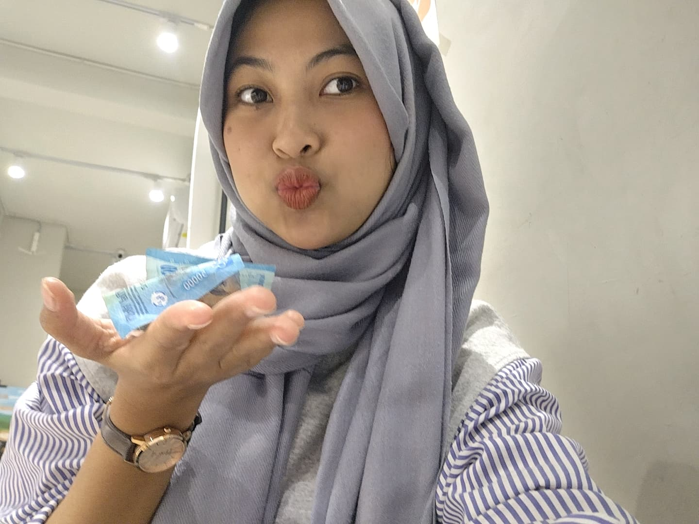

Nama : Dinda Novita Sari
NPM : E1G022006
Program Studi :Teknologi Industri Pertanian
Universitas :Universitas Bengkulu
Tempat Tanggal Lahir :Curup, 29 November 2003
Makanan Kesukaan : Dinsum
Hobi : Jalan-jalan
Minuman Kesukaan : Kopi
Foto :
| Hari | Jam | Mata Kuliah | Dosen | Ruangan |
|---|---|---|---|---|
| Senin | 08.00 - 09.40 | Komputer & Pemograman | Arina Fatharani, S.T.P., M.Sc. | Diklat 3 R.20 | Fitri Yuwita S, S.TP., M.P. |
| 12.00 - 14.00 | Praktikum Mikrobiologi Dasar | Aku Ngo-asst | Laboratorium TP | |
| 14.00 - 15.40 | Karya Tulis Ilmiah | Prof. Dr. Ir. Yuwana, M.Sc. | GB 1 R.4 | |
| Selasa | 08.00 - 10.00 | Praktikum Kimia | Aku Koaast Lagiii | Laboratorium TP |
| 10.00 - 12.00 | Praktikum PBA | Aku Koaast Lagiii | Laboratorium TP | |
| 14.00 - 15.40 | Praktikum SPTPP | Coast Ririn | Laboratorium TP | |
| Rabu | 08.00 - 10.00 | Statistik Industri | Ir. Laili Susanti, M. Si | GB. 1 Ruang 2 | Dr. Evanila Silvia, S.T.P., M. Si |
| 10.00 - 12.00 | Pengukuran dan Instrumentasi | Drs. Bosman Sidebang, M.P | GB 1 R.15 | Dr. Yazid Ismi Intara, S.P., M. Si | Firmansyah, S.T., M. Sc |
| 12.00 - 14.00 | Praktikum TTCK | Coasst Farah Anguru | Laboratorium TP | |
| Kamis | 08.00 - 10.00 | Teknik dan Tata Cara Kerja | Dr. Yazid Ismi Intara, S.P., M.Si | Diklat 3 R.21 | Fitri Yuwita S, S.T.P., M.P | Arina Fatharani, S.T.P., M.Sc |
| 10.00 - 11.40 | Sistem Penanganan dan Transportasi Produk Pertanian | Gb. 1, R.4 | Prof. Dr. Ir. Yuwana, M.Sc. | |
| 14.00 - 16.00 | Manajemen Sumber Daya Manusia | Diklat 3, R.20 | Ir. Lukman Hidayat, M.P | Fitri Yuwita S, S.T.P., M.P | Wica Elvina, M. Si |
| Jumat | 08.00 - 09.40 | Teknologi Hasil Perkebunan | Dr. Yazid Ismi Intara., S.P., M.Si | GB 1 R.9 | Sri Wulandari., S.T.P., M.Sc |
| 16.00 - 17.50 | Bahasa Inggris Akademik | Ir. Wuri Marsigit, M. AppSc | GB. 1 R.9 | Arina Fatharani, S.T.P., M.Sc | Firmansyah, S.T., M.Sc |